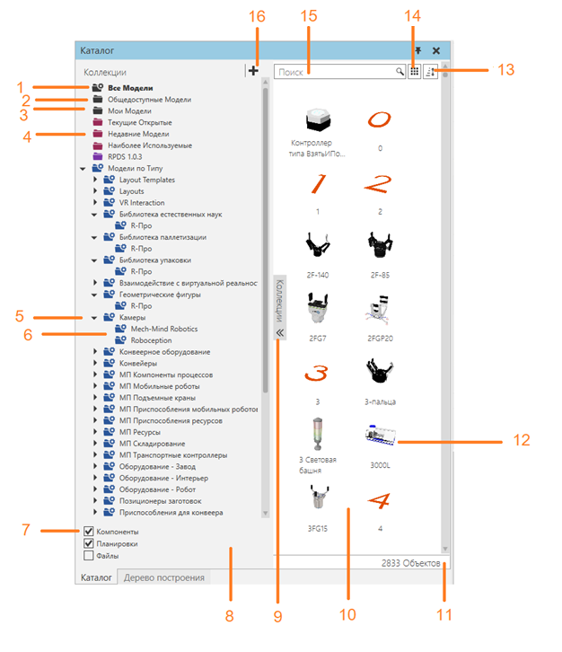
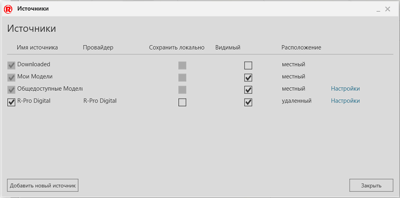
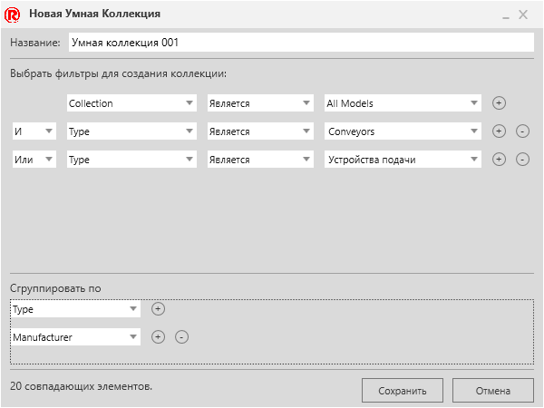
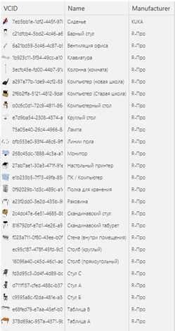
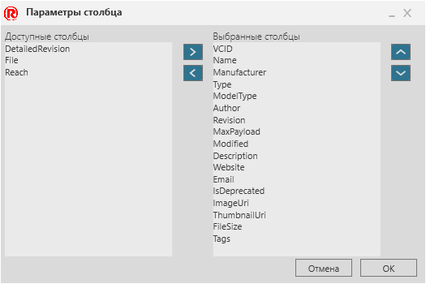
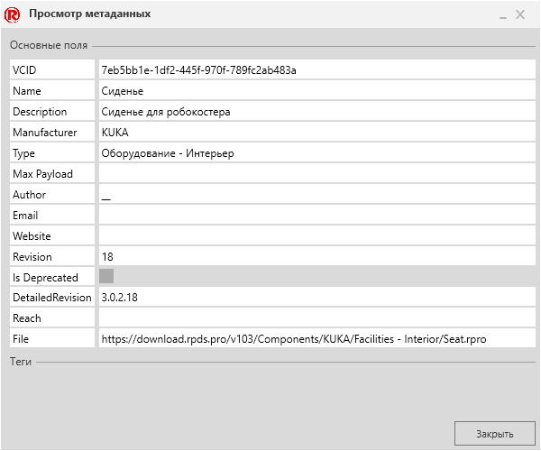

Панель электронного каталога позволяет управлять подключенными источниками файлов и загружать эти файлы в трехмерный мир.

1. |
Системная коллекция для всех связанных файлов |
|---|---|
2. |
Системный источник общедоступных моделей |
3. |
Системный источник для моих моделей |
4. |
Системная коллекция недавно используемых моделей |
5. |
Умная коллекция |
6. |
Группы умной коллекции |
7. |
Фильтры коллекций |
8. |
Панель коллекций |
9. |
Кнопка для сворачивания/разворачивания коллекции |
10. |
Область отображения |
11. |
Количество перечисленных объектов |
12. |
Выбранный объект |
13. |
Параметры сортировки |
14. |
Параметры отображения |
15. |
Поисковая строка |
16. |
Кнопка Редактировать источники |

Источники
В правом верхнем углу панели Коллекции находится кнопка Редактировать источники для доступа к редактору источников. Это позволяет добавлять и редактировать локальные и удаленные источники файлов, связанные с панелью каталога.

Название |
Описание |
|---|---|
Имя источника |
Название источника. Его флажок включает/выключает использование источника. Дважды щелкните поле, чтобы изменить название источника. |
Провайдер |
Издатель источника. |
Сохранить локально |
Включает/выключает загрузку и хранение удаленных исходных файлов в виде локальных копий на устройстве. |
Видимый |
Включает/выключает отображение источника на панели Коллекции. |
Расположение |
Указывает, является ли источник локальным или удаленным. |
Настройки |
Позволяет изменить или удалить каталог локальной копии с устройства. |
Удалить |
Удаляет источник из панели электронного каталога. |
Добавить новый источник |
Позволяет добавить новый источник на панель электронного каталога. |
Умные Коллекции
Умная коллекция позволяет создавать и сохранять пользовательский поиск файлов в источниках, связанных с панелью электронного каталога. На панели Коллекции дважды щелкните смарт-коллекцию в списке, чтобы открыть ее редактор.

Название |
Описание |
|---|---|
Название |
Определяет имя умной-коллекции. |
Фильтры |
Определяет упорядоченный список условий поиска, используемых для выбора элементов, связанных с умной-коллекцией. Поле Имя поля элемента данных в условии. Критерии Оператор сравнения условия. Пример Значение или текст по сравнению с полем в условии. Знак плюс Добавьте новое условие. Знак минус Удалить условие. Логический Присоединить или исключить условие. |
Сгруппировать по |
Группирует совпадающие элементы по одному или нескольким полям в порядке возрастания. |
N совпадающих элементов |
Указывает количество элементов, связанных с умной-коллекцией, в зависимости от условий поиска. |
Сохранять |
Сохраняет существующую умную-коллекцию или создает новую. |
Отменить |
Отменяет операцию редактирования умной-коллекции или добавления новой. |
Подробное Представление
Подробное представление — это параметр отображения панели каталога, который позволяет отображать элементы в табличном формате с использованием метаданных файла. Заголовки столбцов можно перетаскивать вперед или друг за другом, чтобы изменить представление. Значения ячеек можно копировать и редактировать, если перечисленный элемент является локальным файлом.

Редактировать столбцы можно использовать, чтобы выбрать, какие свойства метаданных используются и перечислены как заголовки столбцов в представлении.

Название |
Описание |
|---|---|
Доступные столбцы |
Перечисляет доступные свойства метаданных для отображения элементов. |
Правая стрелка |
Добавить выбранный элемент из доступных столбцов в выбранные столбцы. |
Стрелка влево |
Удалить выбранный элемент в выбранных столбцах. |
Выбранные столбцы |
Перечисляет свойства метаданных, используемые в Подробном представлении. |
Стрелка вверх |
Перемещает порядок выбранного элемента на один уровень вверх в выбранных столбцах. |
Стрелка вниз |
Перемещает порядок выбранного элемента на один уровень вниз в выбранных столбцах. |
Метаданные
Метаданные элемента, отображаемого на панели электронного каталога, можно просматривать, а также редактировать с помощью Просмотр/редактирование метаданных. Если элемент является локальным файлом, вы можете редактировать и добавлять свойства метаданных и теги этого элемента. В противном случае информация будет доступна только для чтения.

Название |
Описание |
|---|---|
Основные поля |
Перечисляет свойства метаданных элемента. Пустое поле используется для добавления нового свойства и значения. |
Теги |
Список тегов/ключевых слов элемента. Пустое поле используется для добавления нового тега. |